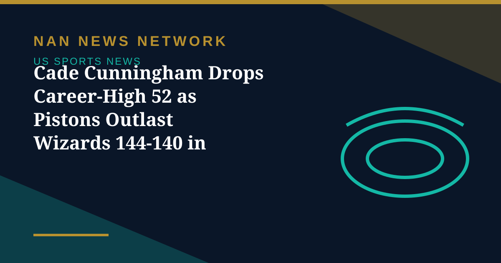

Cade Cunningham Drops Career-High 52 as Pistons Outlast Wizards 144-140 in Double Overtime

Cade Cunningham racked up a career-high 52 points as the Detroit Pistons edged a double-overtime thriller 144-140 against the Washington Wizards on Thursday, Al Jazeera reported on November 13.
A historic night
Cunningham added 11 assists and committed no turnovers, becoming the first player in NBA history to record at least 50 points and 10 assists with zero turnovers since the league began tracking turnovers in 1977-78, according to OptaSTATS. He scored 30 of his points in the fourth quarter and the two overtime periods, and his previous career high was 46 points. Ausar Thompson added a triple-double with 17 points, 11 assists and 11 rebounds.
Two last-second escapes
The Wizards twice extended the game with clutch scores in the dying seconds: Trae Young's three-pointer at the buzzer forced the first overtime, and rookie AJ Dybantsa's midrange effort with less than a second left sent the teams to a second overtime. Young finished with 37 points and 14 assists, but Washington fell to its sixth defeat in a row.
Sources: Al Jazeera, November 13, 2026; ESPN, November 13, 2026
More on US Sports News
- Commanders Edge Giants 24-21 as Daniels' Late TD to Diggs Seals Thursday Night Win
- US Withdraws from U-17 World Cup in Qatar Over Security Fears
- Manchester United Sack Michael Carrick as Pochettino Deal Nears
- Tatum Gets Last Laugh as Celtics Rout 76ers in First Meeting With Brown as Rivals
- Giants Didn't Buy, Jets Didn't Sell: What Now After a Trade Deadline Dud in New York?
- NFL Trade Deadline: Jaguars Go All-In With Three Defensive Trades as Bills Roll On
- College Football Playoff Will Grow to 24 Teams Next Season
- NFL Week 9: Bears Win on Last Play as Eagles Slump to Seventh Straight Loss
- NBA Sunday: Reaves Drops 43 as Lakers Edge Pistons; 76ers Stay Unbeaten
- Spurs Top Trail Blazers 125-103 in Portland
- NFL Week 9 Kicks Off in Madrid as Falcons Face Bengals at the Bernabeu
- Tatum Scores 34 as Celtics Rout Hornets 119-80 for Sixth Straight Charlotte Loss
- Spurs Beat Kings 124-109 as Castle and Harper Score 19 Each
- Jaguars Blow Out Injury-Hit Ravens 33-10 to Kick Off NFL Week 9
- Curry Scores 29 as Warriors Beat Heat 120-100 for Sixth Straight Win
- Wembanyama Drops Career-Best 52 Points and 24 Rebounds as Spurs Edge Mavericks 112-111
- Miami Tops First College Football Playoff Rankings, Followed by Georgia, Utah and Indiana
- NBA Wednesday: 14 Games Return After Election Day, Led by 76ers at Pistons on ESPN
- Grizzlies Look to Rebound From First Loss as Pacers Visit Memphis
- NBA Monday: Pelicans Hand Grizzlies First Loss in OT, Knicks Roll Past Nets
- Why There Are No NBA Games Today: The League Goes Dark for Election Day
- NFL Week 8: Bills Rout Ravens 36-10, Broncos Edge Chiefs 28-24 in Comeback
- First College Football Playoff Rankings Tuesday: Miami Projected No. 1, Ohio State on the Bubble
- USC Stuns No. 2 Ohio State 30-18 as Seven Ranked Teams Fall in College Football's Wild Week 9
- NFL Sunday: Ravens-Bills and Chiefs-Broncos Headline a Packed Slate Capped by Eagles-Commanders
- Cowboys-Eagles Draws 18.8 Million Viewers, More Than Double World Series Game 3
- Brewers Celebrate First World Series Title With Victory Parade in Milwaukee
- Packers Beat Panthers 27-19 on Thursday Night as Brewers Bring the World Series Trophy to Lambeau
- Bears Go All-In: Chicago Lands Jeffery Simmons From Titans for Two First-Round Picks
- Brewers Win First World Series Title in Franchise History, Beating Rays 4-1 in Game 5
- Panthers vs. Packers on Thursday Night Football: Two Wounded Contenders Meet at Lambeau
- Rays Stun Brewers in 12th to Avoid Sweep and Force World Series Game 5
- Caminero Says He'll Play Game 5 Despite Foot Injury: 'If My Foot Is Broken, I'll Play Tomorrow'
- Brewers Rout Rays 10-1 to Take Commanding 3-0 World Series Lead
- Cowboys Crush Eagles 38-21 to Revive NFC East Hopes
- 2026 Sports Equinox: World Series, WNBA Finals and Monday Night Football Share One Night
- Giants Edge Texans 27-21 in Overtime Behind McCarthy Debut and Skattebo's Return
- Unbeaten 76ers Host Unbeaten Pistons in Early-Season Eastern Showdown
- Hornets 115–110 Heat: Miller's 34 Drops Miami to 0–3
- College Football Week 8: UCF Stuns No. 2 BYU, Texas Survives Ole Miss, Virginia Tech Wins at Clemson